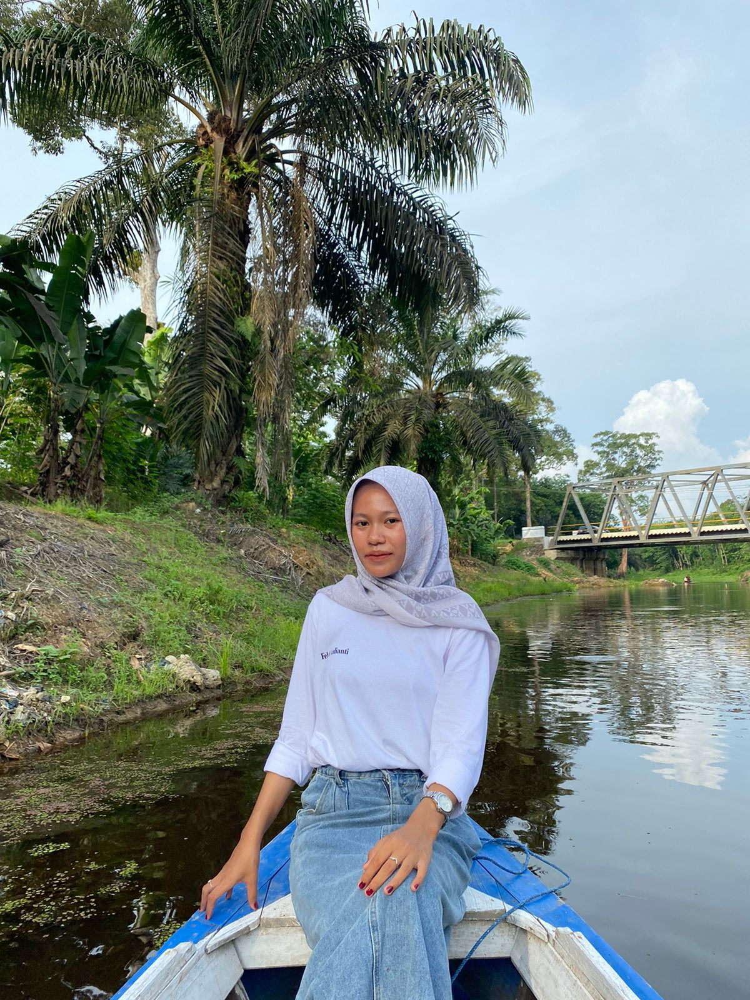

Biodata

Nama: Febbi Ardianti
Tanggal Lahir: 17 Februari 2004
Alamat: Rt.01 Desa Baru Kec.Maro Sebo Kab.Muaro Jambi
Email: febbiardianti@gmail.com
Telepon: 082258657140
Riwayat Pendidikan
- 2022 - 2026: Universitas Nurdin Hamzah Jambi, Sistem Informasi
- 2019 - 2022: SMA N 6 Muaro Jambi
- 2016 - 2019: SMP N 11 Muaro Jambi
Riwayat Pekerjaan
- 2029 - Sekarang: Programmer/Software Developer di Astra Agro Lestari
- 2027 - 2029: Pengelola Website dan Sistem Informasi di Dinas Komunikasi dan Informatika (Diskominfo) Kabupaten Muaro Jambi
Riwayat Organisasi
- 2022 - 2026: Anggota di Himpunan Mahasiswa Sistem Informasi
Riwayat Sertifikasi Keahlian
- 2029: Oracle Certified Professional Java Programmer - Oracle
- 2026: FreeCodeCamp Certification - FreeCodeCamp
Riwayat Karya
- 2029: karya: sanggar Tari - Komunitas Budayo Beladas Bersamo
- 2024: Karya: Tari - Tari Luka gilo